专题2.3 数轴


教学目标 | 1.识记数轴的三要素并会画数轴. 2.能将已知数在数轴上表示出来，能说出数轴上的已知点所表示的数；会用数轴比较有理数的大小. 3.会用数形结合的思想理解在特定的条件下数与形是可以相互转化的. |
教学重难点 | 1.重点：理解数轴的概念，会在数轴上表示数. 2.难点：正确的画出数轴，理解有理数和数轴上点的对应关系. |

知识点1.数轴的概念
概念：规定了 、 、 的 叫做数轴。
三要素： 、 、 。
【即学即练】下列图形是四位同学画的数轴，其中正确的是（ ）
A． B．
C． D．
知识点2.数轴的性质
1.一一对应关系：数轴上的点和有理数是 的。
2.应用 ：（1）比较大小：在数轴上， 的数总比 。
（2）求两点之间的距离：两点在原点的同侧作 ，在原点的两侧作 。
【即学即练】（ ）如图是一个不完整的数轴，请将数轴补充完整，并把下列各数在数轴上表示出来；
）如图是一个不完整的数轴，请将数轴补充完整，并把下列各数在数轴上表示出来；
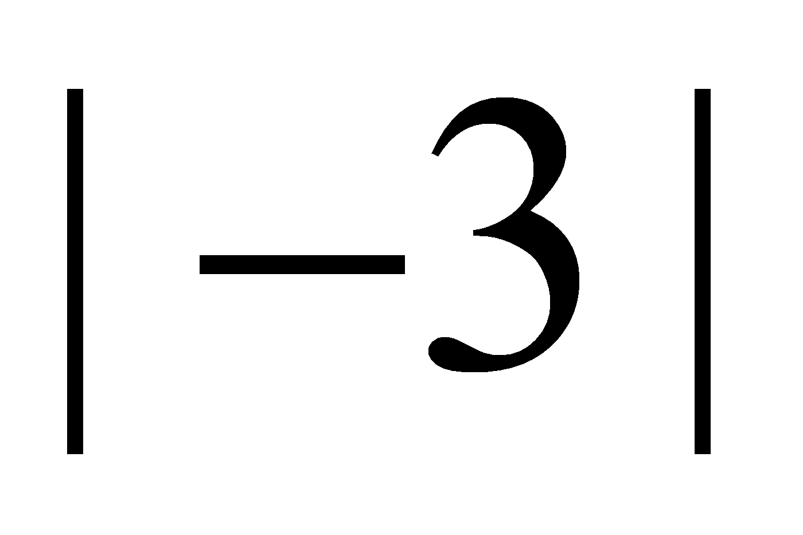
，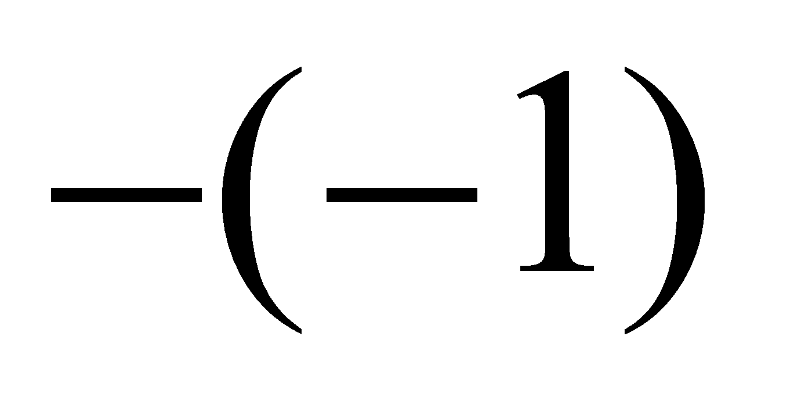
， ，
， ，
， ．
．
（ ）将上述各数按从小到大的顺序用“
）将上述各数按从小到大的顺序用“ ”把它们连接起来．
”把它们连接起来．

题型01 数轴的三要素及其画法
【典例1】下面是几名同学画的数轴，正确的是（ ）
A． B．
C． D．
D．
【变式1】下列数轴表示正确的是（ ）
A．
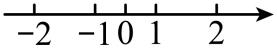
B．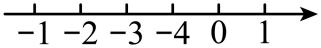
C．
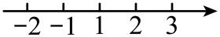
D．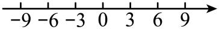
【变式2】下列数轴表示正确的是（ ）
A． B．
B．
C． D．
【变式3】以下是四位同学画的数轴，其中正确的是（ ）
A． B．
C． D．
题型02 用数轴上的点表示有理数
【典例2】已知一组数：0，3， ，
， ，
， ．
．
(1)把这些数在下面的数轴上表示出来：
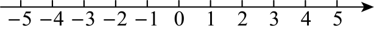
(2)请将这些数按从小到大的顺序排列（用“ ”连接）： ．
”连接）： ．
【变式1】给出下列9个有理数，按下列要求解答：
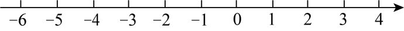
3， ，0，
，0， ，0.45，
，0.45， ，
，
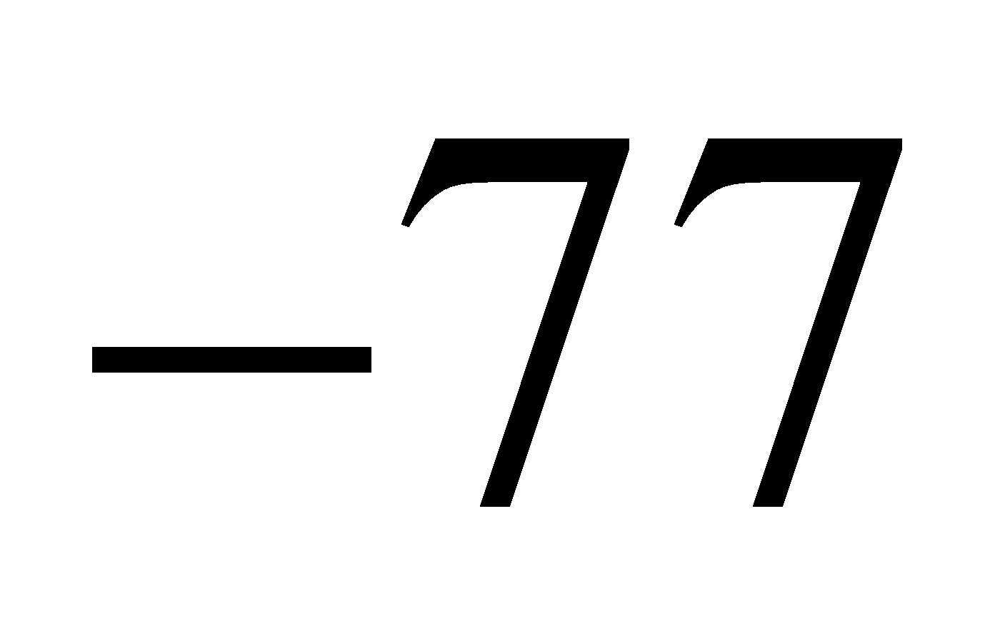
，，
(1)把上面的9个数用“”排列起来；
(2)把数3，0，，，表示在数轴上．
【变式2】如图所示数轴．

(1)写出数轴上A，B，C各点分别表示的有理数：
(2)在数轴上把下列各数分别表示出来： ，
， ，
， ；
；
(3)用“”将（1）、（2）中的六个数由小到大连接起来．
【变式3】已知一组数据：
(1)在数轴上表示出这组数据：
(2)将这些数填入相应的大括号内：
正整数集：{ …}；
负分数集：{ …}；
题型03 数轴上两点之间的距离
【典例3】如图，数轴上点A表示的数是 ，点B表示的数是3，则A、B两点之间的距离是 ．
，点B表示的数是3，则A、B两点之间的距离是 ．

【变式1】点A、B在数轴上的位置如图所示，则A、B两点的距离
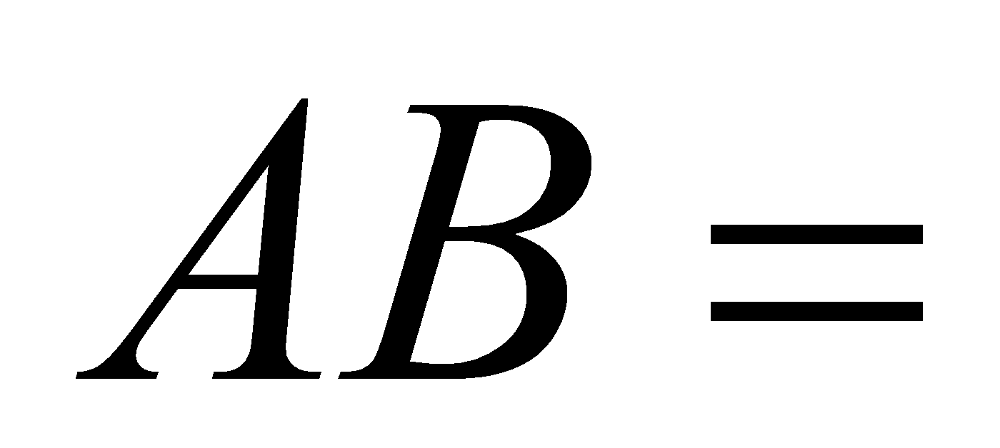
．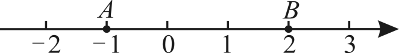
【变式2】已知数轴上有 两点，点
两点，点 表示的数为，点
表示的数为，点 在数轴的负半轴上，若
在数轴的负半轴上，若 ，则点表示的数为 ．
，则点表示的数为 ．
【变式3】已知数轴上点表示的数为，点与点的距离为 ，则点表示的数为 ．
，则点表示的数为 ．
题型04 数轴上整点覆盖问题
【典例4】如图所示，在数轴上，墨渍遮挡住的点表示的数可能是（ ）
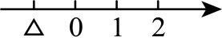
A． B．0 C．
B．0 C． D．2.5
D．2.5
【变式1】小宇不小心将墨水滴在了数轴上，使部分数轴被墨迹遮盖，则被遮盖的部分中表示整数的点有（ ）
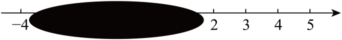
A．3个 B．4个 C．5个 D．6个
【变式2】如图，小冰在写作业时不慎将墨水滴在数轴上，此时墨迹盖住的整数有 个．

【变式3】如图的数轴被墨迹盖住一部分，被盖住的整数点有多少个？它们对应的数是多少？
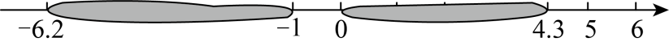
题型05 根据点在数轴的位置判断式子的正负
【典例5】若有理数 、
、 在数轴上的位置如图所示，则、的大小关系为 ．（填“
在数轴上的位置如图所示，则、的大小关系为 ．（填“ ”或“
”或“ ”）
”）
【变式1】有理数a，b，c在数轴上的位置如图所示，则 0．（填“
0．（填“ ”或“
”或“ ”）
”）

【变式2】已知a，b在数轴上的位置如图所示，则
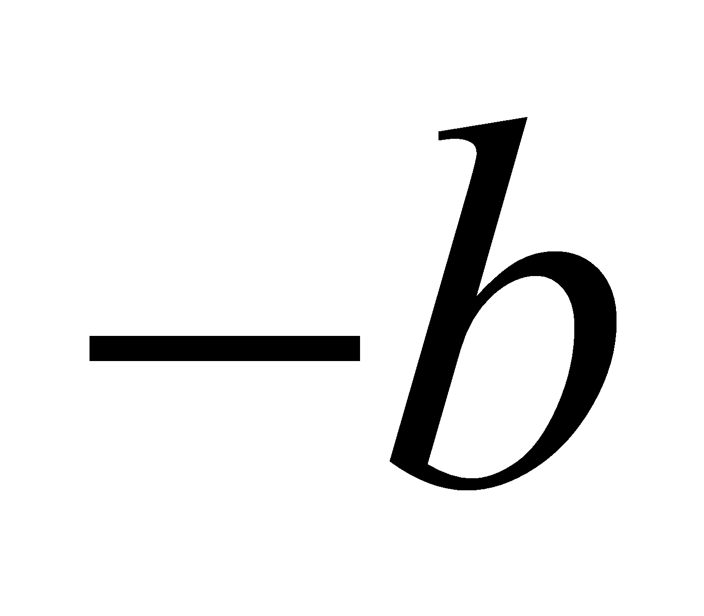
（用“>”或“<”填空）．
【变式3】如图，数轴上的点 ，
， 对应有理数
对应有理数 ，
， ，有以下四个结论：
，有以下四个结论：
 ；
；
 ；
；
 ；
；
 ，其中正确的是
，其中正确的是  填写序号
填写序号
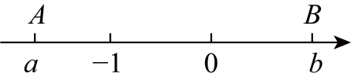
题型06 数轴上的动点问题
【典例6】如图，将点P向右平移3个单位，对应的数是（ ）

A． B． C．0 D．1
【变式1】如图，将点 向右平移
向右平移 个单位，对应的数是（ ）
个单位，对应的数是（ ）

A． B． C．
C． D．
D．
【变式2】在数轴上点如图所示，将点在数轴上右移7个单位到达点，则点所表示的数为（ ）

A．7 B．2 C． D．
D．
【变式3】数轴上一点A向左移动5个单位后到达点B，如果点B到原点的距离为1，则点A表示的数是（ ）
A．1 B．1或 C．5或 D．4或6
题型07 数轴上的规律探究问题
【典例7】如图所示，圆的周长为4个单位长度，在圆的4等分点处标上字母，， ，
， ，先将圆周上的字母对应的点与数轴上的数字1所对应的点重合，若将圆沿着数轴向左滚动，那么数轴上的
，先将圆周上的字母对应的点与数轴上的数字1所对应的点重合，若将圆沿着数轴向左滚动，那么数轴上的 所对应的点将与圆周上字母（ ）所对应的点重合．
所对应的点将与圆周上字母（ ）所对应的点重合．
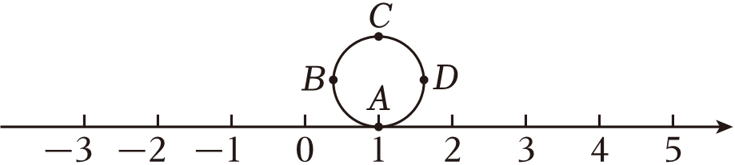
A． B． C． D．
【变式1】正方形 在数轴上的位置如图所示，点D、A对应的数分别为0和1．若正方形绕着顶点顺时针方向在数轴上连续翻转，翻转1次后，点B所对应的数为2；则翻转2024次后，数轴上数2025所对应的点是（ ）
在数轴上的位置如图所示，点D、A对应的数分别为0和1．若正方形绕着顶点顺时针方向在数轴上连续翻转，翻转1次后，点B所对应的数为2；则翻转2024次后，数轴上数2025所对应的点是（ ）
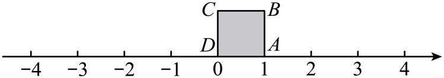
A．点A B．点B C．点C D．点D
【变式2】如图，周长为6个单位长度的圆上的六等分点分别为 ，点A落在1的位置．如果将圆在数轴上沿负方向连续滚动，那么落在数轴上
，点A落在1的位置．如果将圆在数轴上沿负方向连续滚动，那么落在数轴上 的点是点（ ）
的点是点（ ）

A． B． C． D．
【变式3】如图，等边三角形 的边
的边 在数轴上，现将等边三角形沿着数轴向右翻滚（无滑动），第1次翻滚后点到点
在数轴上，现将等边三角形沿着数轴向右翻滚（无滑动），第1次翻滚后点到点 位置．若点表示的数为，等边三角形的边长为2，则翻滚2024次后点在数轴上对应的数为（ ）
位置．若点表示的数为，等边三角形的边长为2，则翻滚2024次后点在数轴上对应的数为（ ）

A．2024 B．4047 C．4049 D．6071

一、单选题
1．如图，数轴上点A表示的数是（ ）
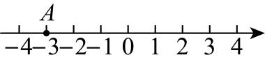
A． B．
B． C．3 D．
C．3 D．
2．下列各图中所画数轴正确的是（ ）
A． B．
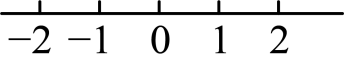
C．
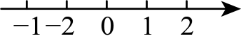
D．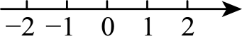
3．如图，在数轴上，点A、B分别表示a、b，且 ．若
．若 ，则点B表示的数为（ ）
，则点B表示的数为（ ）
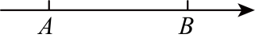
A． B． C．0 D．3
B． C．0 D．3
4．若
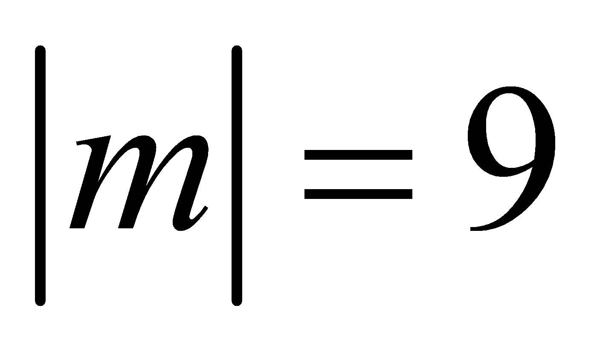
，则数轴上到有理数 对应的点与到对应的点的距离相等的点是（ ）
对应的点与到对应的点的距离相等的点是（ ）A．3 B． C．3或6 D．3或
C．3或6 D．3或
5．若数轴上的点 表示的数是
表示的数是 ，那么与点相距
，那么与点相距 个单位长度的点表示的数是（ ）
个单位长度的点表示的数是（ ）
A． B．
B． C．
C． D．或
D．或
6．若数轴上表示整数的点称为整点，画一数轴，并规定单位长度为l厘米，若在这条数轴上随意画出一条长10厘米的线段 ，则线段盖住的整点有（ ）
，则线段盖住的整点有（ ）
A．8个或9个 B．9个或10个 C．10个或11个 D．11个或12个
二、填空题
7．规定了原点、 和 的直线叫做数轴．
8．如图，数轴上点A所表示的数是 ．

9．下面的数轴被墨迹盖住一部分，被盖住的整数有 个．

10．已知有理数 在数轴上的位置如图所示，则
在数轴上的位置如图所示，则 从大到小的顺序为 ．
从大到小的顺序为 ．

11．如图，在一个不完整的数轴上有 三个点，数轴的单位长度为1．若点
三个点，数轴的单位长度为1．若点 表示的数互为相反数，则图中点
表示的数互为相反数，则图中点 表示的数是 ．
表示的数是 ．

 ∴点表示的数．
∴点表示的数．
12．一条数轴，从数轴上面剪下6个单位长度（从到4）的一条线段，并把这条线段沿某点折叠，然后在重叠部分某处剪一刀得到三条线段．若这三条线段的长度之比为 ，则折痕处对应的点所表示的数可能是 ．
，则折痕处对应的点所表示的数可能是 ．
三、解答题
13．如图的数轴上，每小格的宽度相等．

(1)填空：数轴上点A表示的数是______，点 表示的数是______．
表示的数是______．
(2)点表示的数是，点 表示的数是
表示的数是 ，请在数轴上分别画出点和点的位置．
，请在数轴上分别画出点和点的位置．
14．（1）把数 表示在下面的数轴上．
表示在下面的数轴上．
（2）比较这六个数的大小，并用“>”连接．
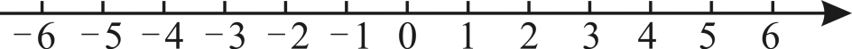
15．如图，数轴上每个刻度为1个单位长度，点A表示的数是．
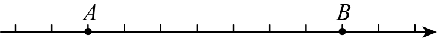
(1)则B所表示的数是______．
(2)数轴上有点P，且P到A、B两点的距离相等，则P点表示的数为______．
(3)数轴上有点C，且与点B的距离为2个单位长度，那么点C表示的数为______．
16．如图，在数轴上有 三点，请回答下列问题．
三点，请回答下列问题．
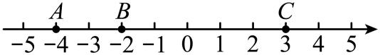
(1)将点B向左移动4个单位长度后，点_______所表示的数最小，是_______；
(2)将点A向右移动3个单位长度后，点_______所表示的数最小，是_______；
(3)将点C向左移动6个单位长度后，点B所表示的数比点C所表示的数大_______；
(4)怎样移动中的两个点，才能使三个点表示的数相同？有几种移动方法？
17．【定义】已知点是线段上的一个分点，若点到线段两个端点的距离之比为 时，则称点为线段的“理想点”．如图，、分别为数轴上的两点，点对应的数为
时，则称点为线段的“理想点”．如图，、分别为数轴上的两点，点对应的数为 ，点对应的数为100．
，点对应的数为100．

(1)求点A、B之间的距离；
(2)求线段的“理想点”所对应的数；
(3)现将一纸条如图放置，再沿纸条上的某处折叠，然后在重叠部分某处剪一刀得到三条纸条，若这三条纸条的长度之比为
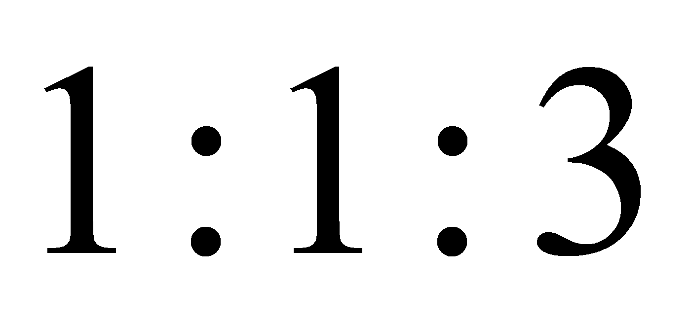
，然后把纸条复原，请计算说明折痕处对应的点在数轴上所表示的数是多少？18．同学们通过学习知道了点A，B在数轴上分别表示有理数a，b，则A，B两点之间的距离表示为 ．请回答：
．请回答：

(1)如图，数轴上表示和5的两点之间的距离是___________，数轴上表示和的两点之间的距离是___________；
(2)若数轴上A，B两点表示的数分别为x和，
①A，B两点之间的距离可表示为___________；
②如果，求x的值；
(3)若数轴上A，B两点表示的数分别为和6，点P是线段上的一个动点，且点P表示的数为x，请直接写出 的值．
的值．